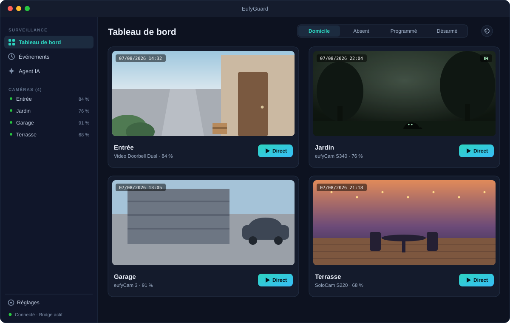
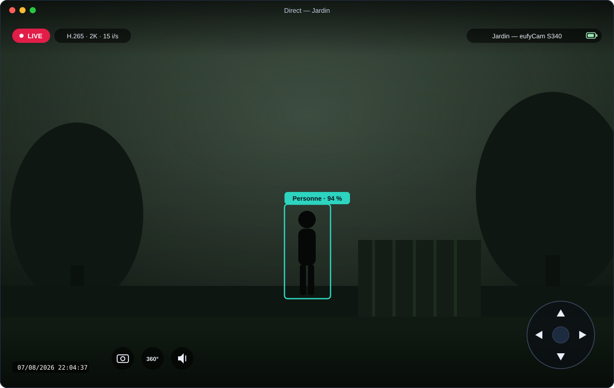
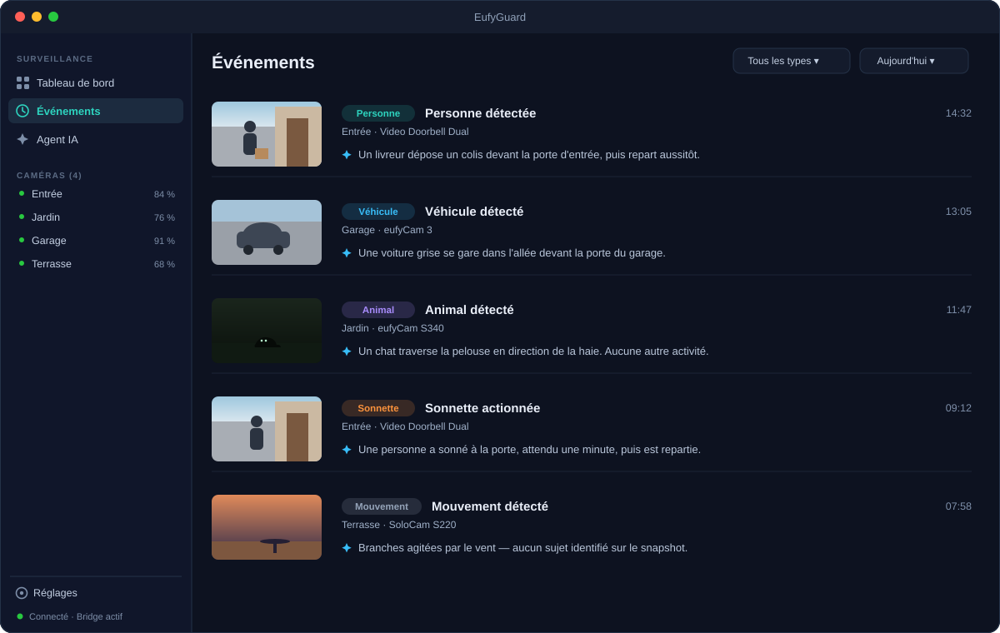
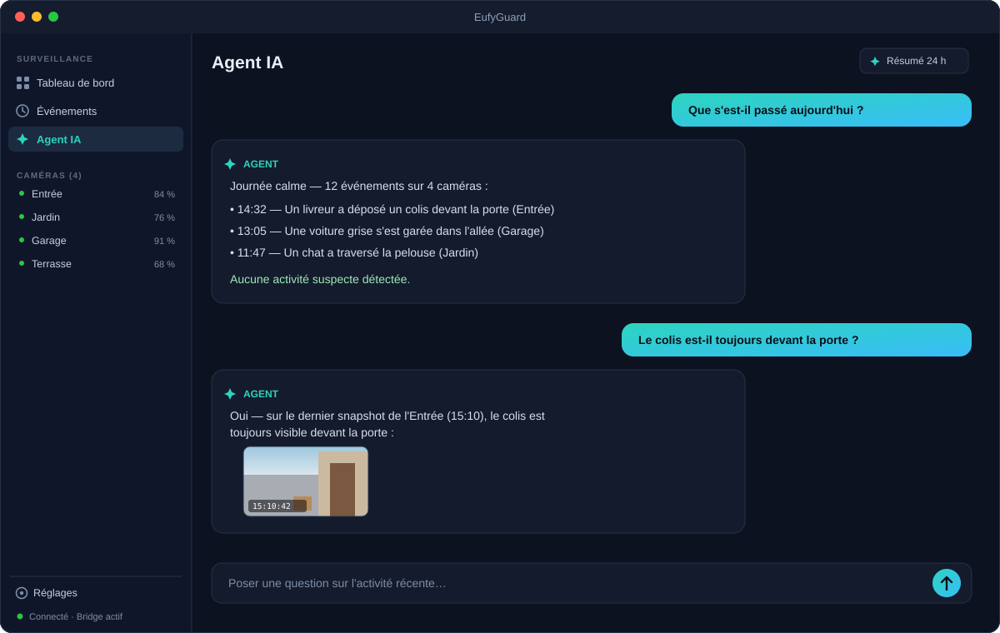

25EufyGuard
Camera watchVeille caméras攝影機監看
Your Eufy cameras, natively on your Mac. Local. Private. AI-assisted.Vos caméras Eufy, en natif sur votre Mac. Local. Privé. Assisté par IA.您的 Eufy 攝像頭，原生運行在 Mac 上。本地、私密、AI 輔助。
EufyGuard talks to your Eufy stations directly — live H.264/H.265 streaming, PTZ control, guard modes, event timeline with snapshots, native notifications, and an optional Claude AI agent that watches, explains and summarizes what happens at home.EufyGuard dialogue directement avec vos stations Eufy — direct H.264/H.265, pilotage PTZ, modes de garde, timeline d'événements avec snapshots, notifications natives, et un agent IA Claude optionnel qui observe, explique et résume ce qui se passe chez vous.EufyGuard 直接與您的 Eufy 基站通信——H.264/H.265 實時直播、PTZ 雲台控制、佈防模式、帶快照的事件時間線、原生通知，以及可選的 Claude AI 智能體，為您觀察、解釋並總結家中發生的一切。
- RequiresConfiguration系統需求
- macOS 14+
- DistributionDistribution發行
- Developer ID signed & notarizedSignée Developer ID & notariéeDeveloper ID 簽名並經公證
- UpdatesMises à jour更新
- Sparkle 2 updatesMises à jour Sparkle 2Sparkle 2 更新
- LicenceLicence授權
- MIT licenseLicence MITMIT 許可證

Native live streamingDirect natif原生實時直播
Raw H.264/H.265 from the station's P2P stream, decoded in hardware by VideoToolbox. No ffmpeg, no browser, no transcoding.Flux H.264/H.265 brut issu du P2P de la station, décodé matériellement par VideoToolbox. Sans ffmpeg, sans navigateur, sans transcodage.來自基站 P2P 的原始 H.264/H.265 碼流，由 VideoToolbox 硬件解碼。無 ffmpeg、無瀏覽器、無轉碼。
PTZ controlPilotage PTZPTZ 雲台控制
Pan, tilt and 360° rotation on motorized cameras — on-screen pad or arrow keys, straight from the live view.Panoramique, inclinaison et rotation 360° des caméras motorisées — pad à l'écran ou flèches clavier, depuis la vue directe.電動攝像頭的平移、俯仰與 360° 旋轉——屏幕方向盤或方向鍵，直接在直播畫面中操作。
Guard modesModes de garde佈防模式
Home, away, scheduled or disarmed — per station, from the dashboard toolbar.Domicile, absent, programmé ou désarmé — par station, depuis la barre du dashboard.在家、外出、定時或撤防——按基站設置，就在儀表盤工具欄。
Events & notificationsÉvénements & notifications事件與通知
Motion, person, ring, pet, vehicle and sound detection land in a timeline with snapshots and trigger native macOS notifications.Mouvement, personne, sonnette, animal, véhicule et son alimentent une timeline avec snapshots et déclenchent des notifications macOS natives.移動、人形、門鈴、寵物、車輛與聲音偵測進入帶快照的時間線，並觸發原生 macOS 通知。
Claude AI agent (optional)Agent IA Claude (optionnel)Claude AI 智能體（可選）
With your own Anthropic API key: vision analysis of every event, a chat grounded on recent activity, and a 24-hour digest.Avec votre propre clé API Anthropic : analyse vision de chaque événement, chat ancré sur l'activité récente, et résumé sur 24 h.使用您自己的 Anthropic API 密鑰：對每個事件進行視覺分析、基於近期活動的對話，以及 24 小時摘要。
Private by designPrivé par conception隱私優先
A local Node bridge on 127.0.0.1 talks to Eufy; credentials and snapshots stay on your Mac. No third-party server, open source.Un bridge Node local sur 127.0.0.1 dialogue avec Eufy ; identifiants et snapshots restent sur votre Mac. Aucun serveur tiers, open source.本地 Node 橋接進程通過 127.0.0.1 與 Eufy 通信；憑據與快照保留在您的 Mac 上。無第三方服務器，開源。
The app in picturesL'app en images應用一覽
Illustrative previews — real camera footage never leaves your Mac.Aperçus illustratifs — les vraies images de vos caméras ne quittent jamais votre Mac.示意預覽——攝像頭的真實畫面絕不會離開您的 Mac。



Up and running in minutesOpérationnelle en quelques minutes幾分鐘即可運行
Download. Grab the latest signed .dmg from GitHub Releases and drop EufyGuard into /Applications.Télécharger. Récupérez le dernier .dmg signé depuis GitHub Releases et déposez EufyGuard dans /Applications.下載。從 GitHub Releases 獲取最新簽名的 .dmg，並將 EufyGuard 拖入 /Applications。
Install the bridge. Clone the repo, then
npm install && npm run buildin bridge/ (Node ≥ 20). The app launches and supervises it for you.Installer le bridge. Clonez le repo, puisnpm install && npm run builddans bridge/ (Node ≥ 20). L'app le lance et le supervise pour vous.安裝橋接程序。克隆倉庫，然後在 bridge/ 中執行npm install && npm run build（Node ≥ 20）。應用會為您啟動並監管它。Sign in to Eufy. Enter your Eufy account in Settings (captcha and 2FA supported). Optionally add an Anthropic API key to enable the AI agent.Connexion Eufy. Saisissez votre compte Eufy dans les Réglages (captcha et 2FA gérés). Ajoutez si vous voulez une clé API Anthropic pour activer l'agent IA.登錄 Eufy。在設置中輸入您的 Eufy 賬戶（支持驗證碼與兩步驗證）。可選填入 Anthropic API 密鑰以啟用 AI 智能體。
Your cameras, your Mac, your data.Vos caméras, votre Mac, vos données.您的攝像頭、您的 Mac、您的數據。
Unofficial project — not affiliated with Eufy or Anker. Built on the open-source eufy-security-client protocol implementation.Projet non officiel — sans affiliation avec Eufy ni Anker. Construit sur l'implémentation open source du protocole eufy-security-client.非官方項目——與 Eufy 或 Anker 無關。基於開源的 eufy-security-client 協議實現。